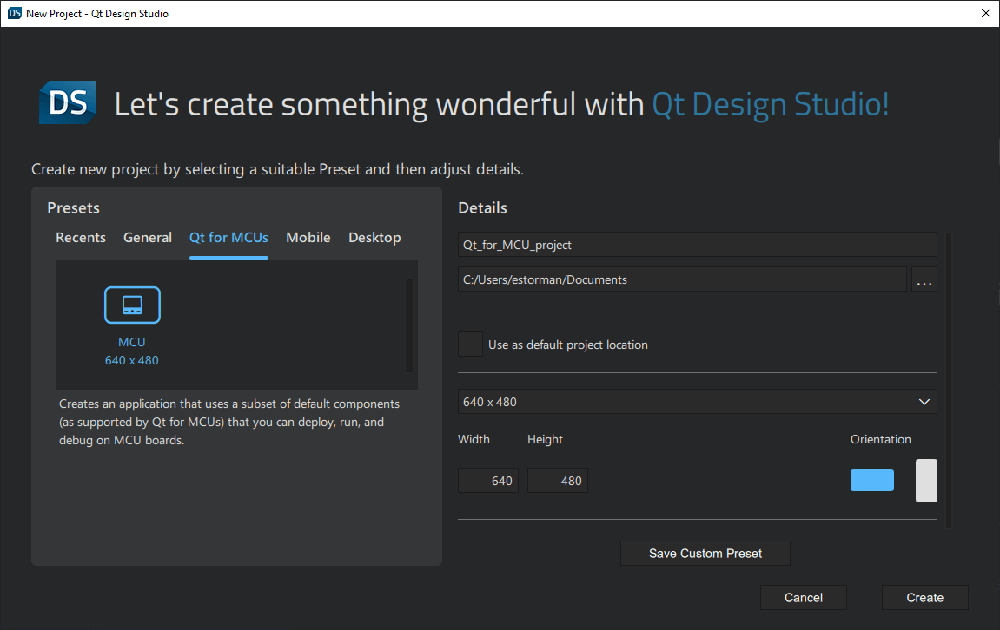

Creating Projects for MCUs
Use the Qt for MCUs preset in the Qt Design Studio wizard to set up a new Qt for MCUs project. When you create a project with the wizard, all the necessary files are created, you can adjust the project settings, and save custom presets.

Using the Qt for MCUs preset creates an application that uses a subset of the default components that you can deploy, run, and debug on MCU boards.
Note: For more information on the default components available for MCU projects, see Qt Design Studio Features on MCU Projects.
Creating an MCU Project
To create an MCU project:
- Select File > New Project.
- In the Presets tab, select the Qt for MCUs preset.
- In the Details tab:
- Select the path for the project files. You can move the project folders later.
- Set the screen size to match the device screen, which also enables previewing on the desktop. You can change the screen size later in Properties.
- Select Create to create the project.
Qt Design Studio creates the following files and folders:
- .qmlproject project file defines that all component and image files in the project folder belong to the project. All files are added automatically to their respective Files node based on their type.
Note: Qt for MCUs does not recommend using the directory property to individually list the files in the project.
- .qml files define the functionality and appearance of application components.
- Screen01.ui.qml defines a custom component that you can edit in the 2D view. For more information, see UI Files.
While the custom component is a good starting point for new users, you don't have to use it. Specifically, if you export and import designs using Qt Bridge, your file is most likely called something else. For more information, see Exporting from Design Tools.
Note: For MCU projects you can only import 2D assets.
- CMakeLists.txt project configuration file allowing you to share your project as a fully working C++ application with developers.
- qtquickcontrols2.conf file specifies the preferred style and some style-specific arguments.
- fonts folder contains font files that you have added in Assets.
- imports folder contains a Constants.qml file that specifies a font loader for the Arial font and the screen resolution. The size of the default Screen.ui.qml Rectangle should be set as
width: Constants.width&height: Constants.heightso that it inherits the global resolution saved here. - MCUDefaultStyle folder contains the default UI images and components available for the MCU project.
To use image files in the UI, select Assets >  .
.
Adding Files to MCU Projects
You can use wizard templates to add individual files to projects.
The wizard templates in the Qt Quick Controls category create stylable versions of the components in the Qt Quick Controls module. For more information, see Creating Custom Controls.
You can create the following types of files:
| Category | Wizard Template | Purpose |
|---|---|---|
| Qt Quick Files | ||
| Qt Quick File | Generates a component with one of the following default components or positioners as the root component: Item, Rectangle, Image, Border Image, Flickable, Row, Column, Flow, or Grid. | |
| Qt Quick UI File | Generates a UI file with one of the above components as the root component. | |
| Qt Quick Views | Generates a List View. For more information, see List and Grid Views. | |
| Qt Quick UI Form | Creates a UI file along with a matching QML file for implementation purposes. | |
| Qt Quick Controls | Custom Button | Creates a push button with a text label. |
| Custom CheckBox | Creates a check box. | |
| Custom Dial | Creates a dial. | |
| Custom Slider | Creates a slider. | |
| Custom SpinBox | Creates a spin box. | |
| Custom Switch | Creates a switch with on and off states. | |
| Pane | Provides a background that matches the UI style and theme. | |
| SwipeView | Enables users to navigate pages by swiping sideways. | |
| QML Files | ListModel | Adds a list model to the project. |
See also Using Custom Presets.